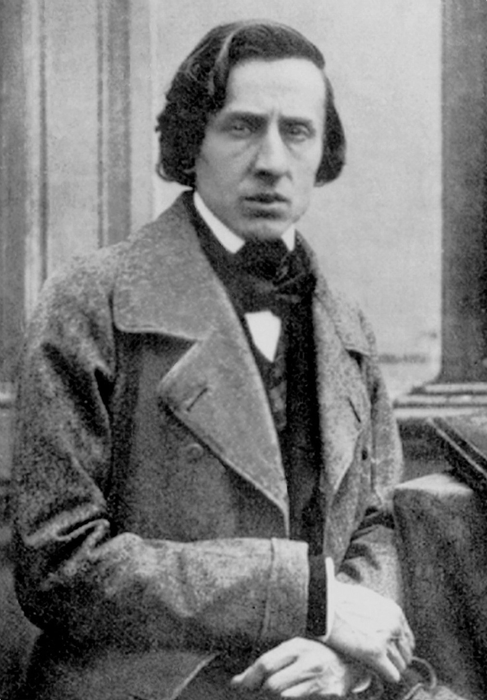

Frédéric François Chopin (born Fryderyk Franciszek Chopin; 1 March 1810 – 17 October 1849) was a Polish composer and virtuoso pianist of the Romantic period who wrote primarily for solo piano. He has maintained worldwide renown as a leading composer of his era whose "poetic genius was based on a professional technique that was without equal in his generation".
Chopin was born in Żelazowa Wola and grew up in Warsaw, which in 1815 became part of Congress Poland. A child prodigy, he completed his musical education and composed his early works in Warsaw before leaving Poland at age 20, less than a month before the outbreak of the November 1830 Uprising; at 21, he settled in Paris. Thereafter he gave only 30 public performances, preferring the more intimate atmosphere of the salon. He supported himself, selling his compositions and giving piano lessons, for which he was in high demand. Chopin formed a friendship with Franz Liszt and was admired by many musical contemporaries, including Robert Schumann. After a failed engagement to Maria Wodzińska from 1836 to 1837, he maintained an often troubled relationship with the French writer Aurore Dupin (known by her pen name George Sand). A brief and unhappy visit to Mallorca with Sand in 1838–39 proved one of his most productive periods of composition. In his final years he was supported financially by his admirer Jane Stirling. In poor health most of his life, Chopin died in Paris in 1849 at age 39.
All of Chopin's compositions feature the piano. Most are for solo piano, though he also wrote two piano concertos before leaving Warsaw, some chamber music, and 19 songs set to Polish lyrics. His piano pieces are technically demanding and expanded the limits of the instrument; his own performances were noted for their nuance and sensitivity. Chopin's major piano works include mazurkas, waltzes, nocturnes, polonaises, the instrumental ballade (which Chopin created as an instrumental genre), études, impromptus, scherzi, preludes, and sonatas, some published only posthumously. Among the influences on his style of composition were Polish folk music, the classical tradition of Mozart and Schubert, and the atmosphere of the Paris salons, of which he was a frequent guest. His innovations in style, harmony, and musical form, and his association of music with nationalism, were influential throughout and after the late Romantic period.
Chopin's music, his status as one of music's earliest celebrities, his indirect association with political insurrection, his high-profile love life, and his early death have made him a leading symbol of the Romantic era. His works remain popular, and he has been the subject of numerous films and biographies of varying historical fidelity. Among his many memorials is the Fryderyk Chopin Institute, which was created by the Polish parliament to research and promote his life and works, and which hosts the prestigious International Chopin Piano Competition, devoted entirely to his works.